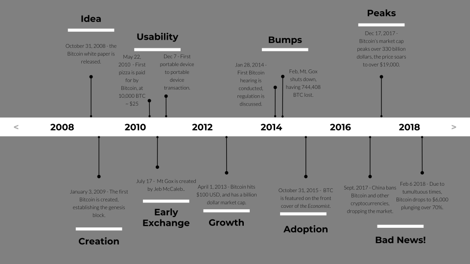

The Technology Behind
B I T C O I N
Key Words!
- (Bitcoin) Address: A series of characters representing a storage for bitcoin, or other cryptocurrency, similar to a bank account.
- Bitcoin: Magic Internet Money - keep on learning to read more!
- Cryptographic hash: Given input data, the hash creates a output quickly, but is extremely difficult to solve for the input data given the output. In this way, a hash may be very useful in digital signatures and authentication.
- Cryptography: Encoding and ciphering information for the sake of security.
- Cryptocurrency: Digital currency for exchanging among parties, and which uses cryptography to secure its transactions (aka a coin).
- ICO: Initial Coin Offering, a proposal to the public to fund a certain coin.
- Market capitalization: Also known as market cap, it is the "worth" of a certain stock or cryptocurrency, which is total amount of shares multiplied by price per share.
- White paper: A document created by the founder(s) of the cryptocurrency to introduce the concept of the coin.
- Miner: In crypto, usually a person, or group of people, working together to authenticate the validilty of a block and its transactions.
Bitcoin's Backstory
In the 90's, a group by the name of Cypherpunks wanted to create systems of which the identity and privacy of the world are better protected through cryptography. These people grouped together to form the organization and tried to give the control back to the common person. They created software and filed lawsuits to provide anonymity, to stop Big Brother from tracking us. From this group were talented individuals, with various creations like Wikileaks and Tor. As time passed, the group eventually stopped working on the projects and disconnected from each other, and the silence was undisturbed until the financial crisis of 2008. Here, amidst the billions of dollars disappearing, was the revolutionary creation of Bitcoin.
A Timeline of Bitcoin
So Bitcoin - What is it?
Created in the late 2000’s by a mysterious person, Satoshi Nakamoto, Bitcoin has become a leading-edge creation creating a rumble inside the economy. Why? Because of the technology behind it.
Bitcoin uses a peer to peer transfer system (P2P) in replacement for a centralized third party. Think of it as this: If Bill wanted to send cash to Mary, you would have to use a bank to transfer the money. Bill’s money would go from your bank to their bank, requiring the use of another party. However, with bitcoin, that’s all different. Instead, Bill would send directly through to Mary, transferring bitcoin from his “account” to hers. There would be no third party, meaning that the money could not be stolen, or the medium could not be hacked. The bitcoin would be securely stored, untampered, and incorruptible. Companies can be hacked because of the central point of security: if you crack there, you got full access. Yet, Bitcoin is able to be spread out without any central target of access. You’re probably asking, “How does this even work?” Well, that is where we enter blockchain.
Blockchain
Blockchain, in a sense, is the replacement for the third party. Instead of trusting a bank or otherwise specific organization, people trust the general consensus. Blockchain is a sort of large, public, and distributed database adaptable for many uses. Whenever a change happens in the database, like sending bitcoin to a friend, it is noted as a change in the ledger. However, it may not just be bitcoin or money but literally anything of value or importance. Contracts, insurances, and goods can be documented for the protection of individuals. Much of this data is amassed into a block, which is chronologically lined up into a chain (hence the name. The blockchain consists of many blocks, recording and displaying changes since the very first block, the genesis block. Even more so, the changes are tamper-proof, with sheer algorithms keeping it so. Each block has a cryptographic hash of the previous block, going all the way back to the first. As time continues, the possibility of the ledger becoming altered by malicious sources drops exponentially as more changes happen and time passes on. Being tamper-proof, exceedingly scalable, incorruptible, and hugely impactful in many markets, Blockchain offers a much more optimized solution for the transfer of goods, rather than a central network operating on a thin rope.
Why - Blockchain
Here's an example from TED:
Further Developments
Now blockchain comes into play, removing the large need of having a third party or even human control. Already, people around the world have already been creating new innovations with blockchain technology. For example, famous stock exchange Nasdaq is thinking about developing a new way to vote with a blockchain system. By taking the tamper-proof and public aspect of Bitcoin’s blockchain, and applying it to our current voting so that we can see the legitimacy of a vote, Nasdaq hopes to see a more legitimate estimate of the corporate shareholders. Ethereum, another cryptocurrency, has brought up the idea of smart contracts, a sort of contract, but instead to be run by officials of the legal government, they are to be run by a huge computing network instead. The smart contracts are securely stored and accounted for, and so when the standards are met, the code set into the program executes. In one case, we could record land rights onto a blockchain, while also handling insurance claims, and also managing the supply chain. The possibilities of blockchain are limitless, so “What can YOU do?”
Credits & Sources
- “Bitcoin.com.” Bitcoin.com Charts, charts.bitcoin.com/chart/price.
- ChrisRecordVlogs. “Chris Record - HODL GANG - Bitcoin Rap Gucci Gang Remix Parody #hodlgang.” YouTube, ChrisRecord, 29 Dec. 2017, youtu.be/JZYZoQQ6LJQ.
- “Complete Bitcoin Price History Chart.” 99 Bitcoins, 99bitcoins.com/price-chart-history/.
- Hoskinson, Charles. “The Future Will Be Decentralized | Charles Hoskinson | TEDxBermuda.” YouTube, TEDx Talks, 4 Dec. 2014, youtu.be/97ufCT6lQcY
- Khan Academy. “Bitcoin - Cryptographic Hash Function.” YouTube, YouTube, 1 May 2013, www.youtube.com/watch?v=0WiTaBI82Mc.
- Lewis, Rhian. “30 Things You Can Do with a Blockchain – Digital Chains – Medium.” Medium, Digital Chains, 27 Oct. 2016, medium.com/yope-chain/30-things-you-can-do-with-a-blockchain-b23b2ab39664.
- O’Leary, Martin. “The Mysterious Disappearance of Satoshi Nakamoto, Founder & Creator of Bitcoin.” The Huffington Post, TheHuffingtonPost.com, 7 Dec. 2017, www.huffingtonpost.com/martin-oaleary/the-mysterious-disappeara_2_b_7217206.html.
- “What Is Bitcoin.” TL BITCOIN, tl-bitcoin.com/what-is-bitcoin/.
- Photos page background Designed by Freepik